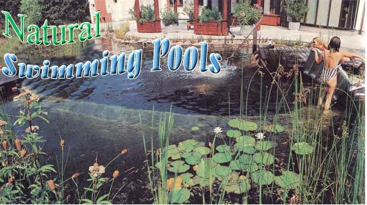
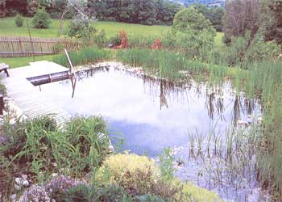
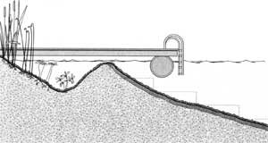
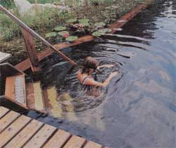
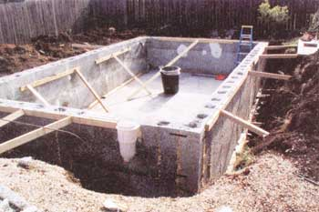
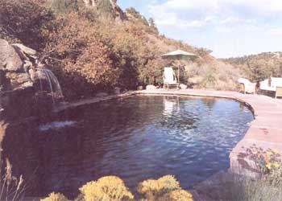

Though fairly common in Europe, natural swimming pools (like the one pictured above in an Austrian family's backyard), are in their infancy in the United States. Ask most American swimming-pool contractors to build a backyard pool and chances are they'll roll out a long list of goods, including rebar, gunite, fiberglass, chlorine and an energy-sapping filtration system. But in recent years, a few builders and a growing number of homeowners have learned how to build pools without relying on a mass of manufactured materials and chemical additives. They've found it's possible to construct pools that are more about building with nature and blending into the natural landscape. Natural swimming pools use gravel stone and clay in place of concrete or fiberglass, and aquatic plants instead of harmful chemicals and complicated mechanical filtering systems. The plants enrich the pool with oxygen, support beneficial bacteria that consume debris and potentially harmful organisms, and give habitat to frogs, dragonflies and other water life. The result is a beautiful, ecologically diverse system that is relatively inexpensive to construct. (A natural pool can he constructed for as little as $2,000 if you do it yourself, while conventional pools can cost tens of thousands of dollars.) Natural swimming pools require no harmful chemIcals, are fairly low-tech, and once established call for only a modicum of management. You won't have to drain the pool each autumn. Except for topping it off now and then, you'll fill the pool only once.
DIG IT
The cheapest and most ecologically sound way to build a swimming pool is simply to hollow a hole in the ground. You can make your pool as shallow or as deep as you want, but the key is to make sure the sides slope: Otherwise the soil will cave in. The ratio should be a 1-foot vertical drop for every 3 horizontal feet. "It's not a bathtub effect, but more like a soup bowl," says Tom Zingaro, partner with Denver-based Blue Lotus Designs, a pool-and pond-architecture company. One of the main reasons traditional swimming pools are constructed with a steel framework is to ensure the walls stay vertical and perpendicular to the bottom surface of the pool. Construct a pool with sloping sides and you'll eliminate the need for any steel reinforcement.
ZONING
Reserving at least 50 percent of your pool's surface area for shallow plants, either at one end or in a ring around the sides, eliminates the need for chlorine and expensive filters and pumps. You'll want to separate the swimming area of your pool and the filtration area, or plant zone (see the illustration). A rim within an inch of the water's surface keeps plants in their place but allows water from the swimming area to move to the plant zone for filtering, As water passes through the fibrous root structure of the plants, bacteria concentrated on the plants' roots act as a biological filter, removing contaminants and excess nutrients in the water. Decomposer organisms, also found in the plants' root zones, consume the bacteria, effectively eliminating underwater waste buildup.
Inside the plant zone, the water should get steadily deeper, reaching a maximum depth of 18 inches near the swimming zone. The outermost 6 inches of the plant zone will be 2 to 3 inches deep, providing a home for taller aquatic plants. Submergent and floating vegetation occupy the deeper area.
Besides cleaning the water and making your pool beautiful to behold, the shallow plant zone warms the water quickly and provides habitat for frogs and many invertebrates. They'll appreciate the shallow water for breeding grounds and repay the favor by eating mosquito larvae.
NATURAL FILTRATION
The water needs to circulate continuously for the plants' roots to cleanse the pool. You also may need to aerate the water so the water organisms' oxygen needs are met. (Without adequate oxygen, your pool could become stagnant, harboring odoriferous anaerobic bacteria.)
Water can be channeled from your pump into your plant zone through the use of PVC tubes. (Zingaro recommends using flexible PVC in cold climates.) In any climate, bury the tubing in the soil about 18 inches deep. Underwater aeration, which uses less energy than constructed waterfalls and circulates water more effectively, involves diffusing air at the pool's bottom. You can build your own aerator, using an air compressor (1/4-horsepower for a pool smaller than an acre) and high-strength tubing that connects to a diffuser. The diffuser (see "Equipment Sources"), which bubbles air through the water, rests in the deepest part of the pool, where swimmers are not likely to damage it. Connect a brass manifold to the compressor to regulate the air pumped into the pool. Don Schooner at Inspired By Nature, an Ohio-based, pond-and-lake-restoration company, suggests aerating the pool four to eight hours a day: in the morning, when oxygen demand is greatest, and again in the evening. Place your aerator, pump and skimmer in a plastic container, such as a bucket or large plant container, and put a steel-mesh filter mat over the top, to keep debris out of your equipment. Expect to pay $1,000 to $1,200 for a quality underwater aeration system.
Some folks use skimmers hooked up to an additional small pump, to suck off floating undesirables. While these devices are not essential, you might want to consider purchasing one if leaves or seeds from nearby trees and shrubs are likely to litter your pool. The skimmer removes detritus that would otherwise sink and contribute to algae growth.
Installing pumps and compressors can be a tricky business because you're running electrical devices near or in water, You'll want to connect electrical hardware to your home power supply through a buried conduit. Do not run your power through an extension cord. Hire a skilled electrician who will ensure the safety of the system.
Once you've dug the hole for the swimming pool and the plant zone, you have a couple of options, depending on your soil conditions, to make sure the pool holds water: You can apply a layer of bentonite clay to seal the soil or lay a synthetic liner. Bentonite is usually the cheaper option, averaging 35 cents per square foot. Liners can cost 25 cents to $1 per square foot, depending on their composition and weight.
Bentonite works as a glue, bonding with the soil particles and preventing pool water from seeping into the ground. Some soils may contain enough clay that simply compacting the pond bottom will enable it to hold water. Talk to local pond builders to find out for sure. But beware: Bentonite doesn't bond well with sandy soil. Particularly sandy soil can require up to 12 pounds of bentonite per square foot, as opposed to 6 pounds in clay-rich soil. Bentonite also can be troublesome when the surrounding soil is very dry. In arid climates, Zingaro recommends bentonite be applied beneath a plastic liner that is woven or textured on the bottom. This liner keeps the bentonite from shifting. In more humid climates, bentonite can be applied directly to the soil. Before treating your pool with bentonite or any other clay powder, thoroughly compact the soil. You can do this with a lawn roller or a plate compactor. Then, while wearing a mask, spread a 2- to 3-inch layer of bentonite powder along the pool sides and bottom. Pack it down with a tractor or plate compactor. Then apply another foot of quality topsoil and compact again.
If you choose a liner, select one made of ethylene propylene diene monomer rather than PVC. EPDM is a synthetic rubber twice as expensive as PVC, but it's worth the extra cost. It has protection from ultraviolet rays, and unlike PVC remains flexible in cold weather. If your soil has a lot of rocks or roots, select a 45- or 60-millimeter liner. You can use a 30-millimeter liner if your soil is very sandy and smooth, and if you and your guests aren't likely to tear holes in a liner while frolicking in the pool. Before laying your liner, compact the sod and cover it with a layer of sand or an absorbent material such as old carpeting or newspaper. Newspaper is a good option: When wet, it bonds to the liner, providing extra protection if the liner develops a small hole.
After the bentonite clay or a liner is installed, cover the bottom of the pool with 4 to 5 inches of gravel. The gravel provides a habitat for beneficial bacteria, which help biodegrade leaves or other natural materials that sink to the bottom of your pool. Make sure you use clean gravel. Fill a 5-gallon bucket with a spigot with some of the gravel you intend to use. Open the spigot and run water through the gravel. If the water comes out dirty, you need to clean the gravel (a taxing, water-wasteful process) or find another source. Expanded shell aggregates and other manufactured gravels are likely to be clean enough to use in your natural pool. In addition to lining the pool with gravel, many people opt to build cobblestone steps for access into and out of the pool. A cantilevered dock built out over the water also provides an easy way to get in and out of the pool, and helps protect the pool's sides.
To finish the edges of your pool, run a plate compactor around the perimeter. This will help with soil erosion, but it's not enough to guarantee dirt won't fall into your pool. One option is to edge the perimeter with rocks, flagstone or wood planking. Better still, plant right next to the edge and let the plants stabilize the perimeter, says Martin Mosko, principal architect with Marpa and Associates, a Boulder, Colorado-based landscaping company. Plants work not only to anchor the soil, but create a natural setting for an old-fashioned, swimining-hole effect. Mosko says if you use plants instead of stone, choose plants that thrive in wet soil or make sure the water level is at least a foot below the pool's edge so the perimeter plants don't become waterlogged.
CONCRETE OPTIONS
If you prefer a more conventional pool shape, consider construction with cement or Rastra block, a material manufactured from cement and recycled foam plastic. Less ecofriendly than gravel and stone, these systems still can reduce chemical and energy usage by using plant-based filtration systems rather than mechanical filters and chlorine to clarify the pool water.
Pouring a concrete pool can be tricky. You have to have the right mix and the right density to prevent cracking. Because of the intricacies involved in concrete pouring, Zingaro advises against do-it-yourself concrete pool construction. If you're experienced in concrete work, he offers the following tips: Use an 4-1 ratio mix of portland cement and sand, and cover the compacted soil with fiber mesh, a rubber liner, old carpeting or newspaper, to provide a stable surface for the concrete to adhere. After the concrete is poured, trowel on a %inch coat of stucco to waterproof the pool, since concrete is porous.
An alternative to concrete is Rastra block. These blocks are 10 feet long, 15 or 30 inches high, and 10 or 14 inches thick. Made of recycled polystyrene and cement, they weigh a fraction of concrete: Two people easily can set 10-foot sections into place. Kenton Knowles of Global Homes in Baldwin City, Kansas, built a 16x32-foot pool out of Rastra for about $1,600 in materials.
To build a Rastra-block pool, excavate a hole just larger than the pool's dimensions to allow for ample workspace. Most people choose to construct a pool 5 feet deep. For the bottom, either pour a concrete slab or cover the bottom with a rubber liner. Then line the bottom with gravel. Make sure to install a drain and backflow preventer. Lay one section of Rastra block along the edges of the slab, securing the Rastra to the pad with rebar. Fill the Rastra blocks' cavities with concrete. As the concrete flows from block to block, the structure is tied together. An expanding foam sealant is used between courses and at all joints to hold the blocks in place. Knowles recommends waterproofing the blocks by troweling on two coats of stucco. Backfill the space between the sides of the pool and the Rastra block with soil. You can finish the perimeter with stones laid from the top of the blocks out into the surrounding area, or you can grow plants to the edge of the blocks.
PREPARE FOR PLANTING
Once your pool is constructed, you'll need to prepare the plant zone with 3 to 6 inches of soil. Choose your soil with care as soil can carry various contaminants. Avoid harvesting soil from areas where animal excrement is prevalent, such as in dog runs or from grazing areas. Select soil that's free of organic matter, which would rot underwater. You can have a lab test soil samples for potentially pathogenic bacteria. To find a laboratory in your area, contact your state's health department. once soil, gravel and hardware are in place, you can fill the pool. Disturb the soil as little as possible and let the pool rest for a week before installing plants. During this time, you can test your hardware to make sure it works.
SELECTING PLANTS
Be sure to choose plants suited to your climate. Your best bet is to obtain your plants from a native-plant supplier. Check the phone book and Internet for local sources. Home and garden centers also carry more aquatic plants now that backyard ponds are growing in popularity. End-of-the-season sales can save you money. Several mail-order nurseries also specialize in water-garden plants. (See "Pool Construction and Design.")
Sedges (Carex) and rushes (Scirpus), both aquatic plants, make great emergent vegetation for your pool's perimeter. You can also consider lesser cattails (Typha angustifolia) and aquatic irises, though be sure to ask which varieties won't overcrowd other plants. Pickerel weed (Pontederia cordata), arrowhead (Sagittaria) and water primroses (Ludwigia) are all contenders for the shallowest areas of your pool. Be sure to include submergent plants such as common waterweed (Elodea) and hornwort (Ceratophyllum) for their high oxygen output.
In water 6 to 18 inches deep, plant a mix of floating, submergent and emergent plants. Water lilies (Nymphaea) adapt to any depth, so use them liberally. Floaters, such as pondweeds (Potamogeton) and common duckweed (Lemna minor), drift freely on the surface and quickly cover the surface of the plant zone.
Before you make plans to tromp off to the nearest country pond and gather up a truckload of greenery, wait! Before collecting a single plant from the wild, know the laws protecting wetlands and their plants. if you do collect, be careful to guarantee the health of the wetlancl by selecting only a few samples from larger populations. Consider rescuing plants from a threatened site. Perhaps a new corporate headquarter's construction is going to destroy your favorite frog hollow. Contact the company to see if it will allow you to rescue the imperiled plants and maybe a few amphibians.
Once you've purchased your plants, you can plant them in the filled pool. Stick to a plan, grouping plants according to height and type. Place your plants into the soil, anchoring them, with plenty of gravel.
ALGAE CONTROL
Pond owners have been battling algae the mighty green menace -for eons. Algae compete with plants for nutrients and light, but spring algae blooms often decline as soon as water lilies and other plants emerge to shade the water. Promote plant growth and deter algae by adding plants and eliminating phosphorous to maintain a lower pH (5.5 to 6.5). The easiest remedy, and the least risky to your aquatic ecosystem, is to add more plants, which will outcompete the algae for nutrients. A second option is to monitor the pool for phosphorus. Fertilizers and urine are the two major sources of this nutrient, so make sure your pool is free of nutrient-rich runoff and remind everyone to use the bathroom before swimming. You can also increase your aeration schedule to stimulate more biological activity.
If algae problems persist, adding small amounts of straw to the pool will help. For full details, visit the Institute of Arable Crops Research Web site at www.iacr.bbsrc.ac.uk/pie . Go to the Center for Aquatic Plant
Management link and download "Control of Algae Using Straw." For barley straw sources, go to www.ianr.unl.edu/pubs/wildlife/nf429.htm or www.naturalsolutionsetc.com.
Enzymes, bacteria, acids and other strange brews have been offered as magic bullets for obstinate algae. Introducing additives to your pool may be an interesting scientific experiment, but it won't necessarily improve the pool you've invested plenty of time and money in. Beware of salesmen hawking their grand variety of miracle algae cure-alls. Remember: Your pool is a dynamic, living ecosystem. Adding synthetic chemicals probably will not bring it back into balance.
Pool Protection
Do you need to be concerned about cultivating potential pathogens in your pool? While it's true aquatic plants do not remove all contaminants from the water- and pools constructed of dirt, concrete or rubber liners don't necessarily keep bacteria at bay - the probability for contracting a serious disease from your natural swimming pool is low. Dr. Michael Beach of the Centers for Disease Control and Prevention says even chlorine-treated swimming pools can fall prey to fecal coliform contamination, which is responsible for problems such as cryptosporidiosis, a parasite that can cause diarrhea and stomach cramps. Keep babies and pets out of the waters to avoid contaminating your pool with fecal coliform. If you're uncertain about your natural pool's water quality, have it tested.
MAINTENANCE
Removing plant litter in spring and fall will help maintain the long life of your natural pool. Keep your water level constant, and be prepared to add water as needed. inexpensive test kits, available in garden centers, will allow you to monitor your pool's nutrient levels, alerting you to problems.
In addition to maintaining the pool's biological health, check the mechanical systems annually. Wipe diffusers with vinegar to remove deposits, check air hoses for cracks and obstructions, and examine all connections to the pumps. Given these precautions, your pool should provide you cool pleasure for years to come.
Environmental writer and educator Douglas Buege is an avid organic gardener and beekeeper. Freelance writer and editor Vicky Uhland has written about holistic lifestyles for a variety of publications.
I Inspired by this article to build your own natural pool? Share your story and cool pool photos with
MOTHER: Mother Earth News; 1503 SW 42nd; Top St., Topeka, KS 66609 or e-mail: letters@motherearthnews.com
Aeration
Water Testing
Pool Construction and Design
Biotop (Austria)
Blue Lotus Design
Global Homes Design
Water Gardening Magazine
|
 COURTESY BIOTOP Build a natural swimming pool and enjoy the water. |
 COURTESY BIOTOP Rushes, sedges and water lilies not only provide a beautiful border around your natural pool, but they keep the water clear and clean. |
 MELANIE POWELL A cross-section of a natural pool, showing the plant zone and swimming area. After compacting a thin layer of soil, a liner and gravel were applied to the pool's bottom. A floating dock equipped with a ladder provides easy access into and out of the pool. |
|
 COURTESY BIOTOP Home to frogs, water striders and dragonflies, natural pools are a treasure trove of niches kids love to explore. |
 KENTON KNOWLES You can use Rasta blocks made of cement and recycled polystyrene to build a conventional pool with vertical sides. Establish your plant beds around the outside perimeter to naturally filter and clean your pool. |
 CHERYL OPPERMAN With its neat stonework edge and graceful waterfall, this pool creates a spectacular summertime oasis in Castle Rock, Colorado. |